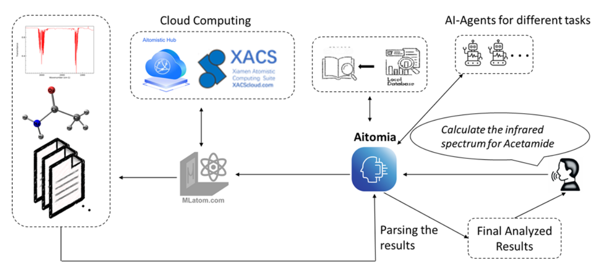
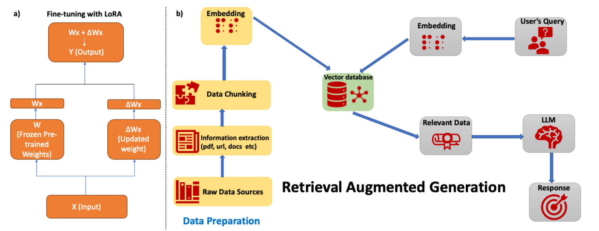
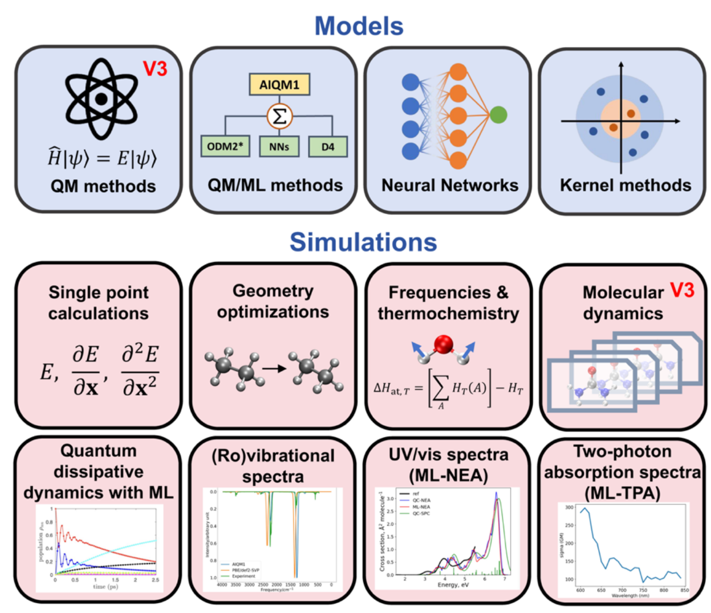
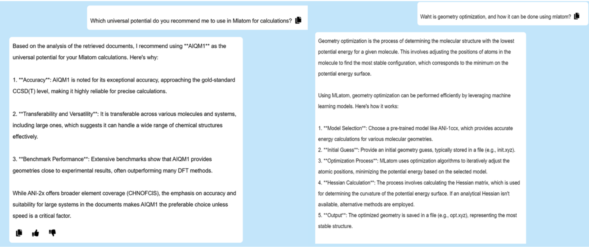
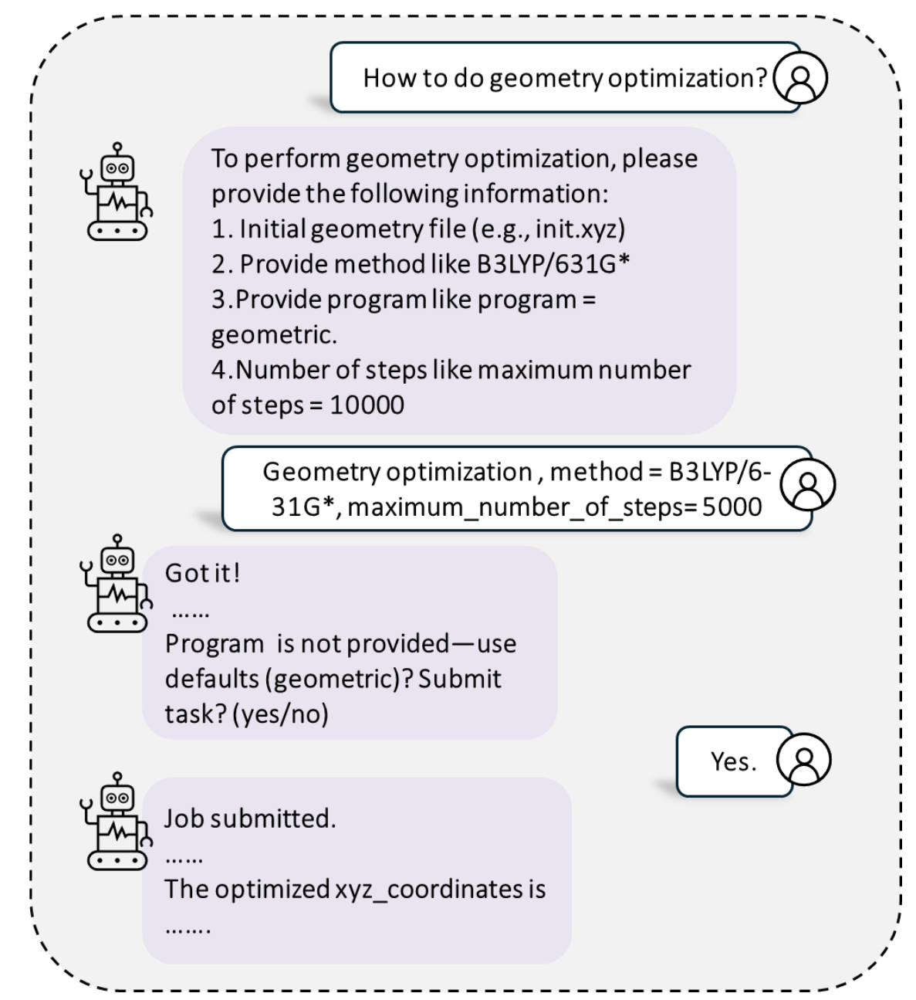
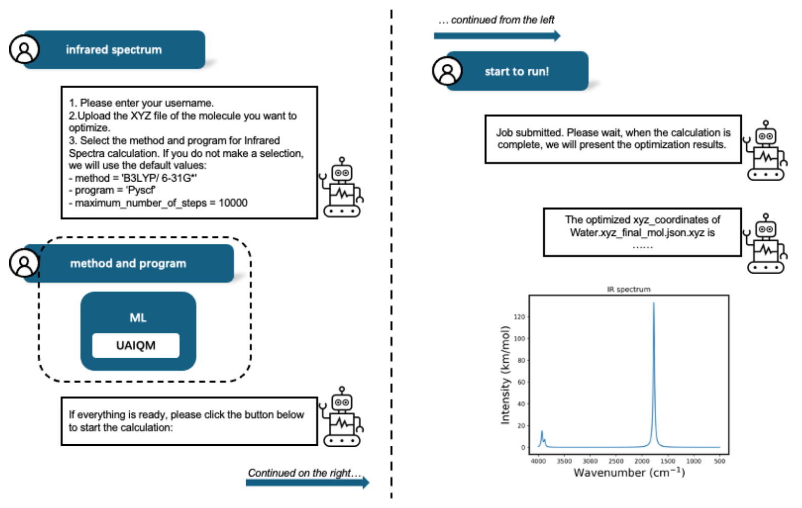

计算化学，作为现代化学研究不可或缺的“第三只眼”，通过模拟原子和分子的行为，为我们揭示反应机理、预测材料性质、辅助药物设计提供了强有力的工具。从第一性原理的量子化学（QC）计算到日益兴起的AI驱动原子模拟，这些计算方法正以前所未有的深度和广度拓展着我们对物质世界的认知。
然而，这股强大的计算浪潮之下，一个不容忽视的现实是：计算化学工具的使用门槛依然相对较高。研究人员不仅需要理解复杂的理论背景和特定软件包的繁琐选项，常常还需要具备Linux操作技能，并依赖高性能计算（HPC）资源。当需要模拟真实的、复杂的化学过程时，往往还涉及到多个计算软件包的联用，这进一步加剧了操作的复杂性，使得许多实验化学家、学生乃至部分理论研究者望而却步。
尽管图形用户界面（GUI）和一些Web计算平台在一定程度上简化了操作，但它们往往未能从根本上解决参数设置的困扰、HPC资源的依赖以及结果解读的难题。在大型语言模型（LLM）如ChatGPT等展现出惊人智能的今天，我们不禁要问：LLM能否成为连接普通研究者与高深计算化学之间的桥梁，提供一个真正用户友好的解决方案？
近期，研究，为我们描绘了这样一种可能。它介绍了一个名为Aitomia的AI智能助手平台，旨在通过人机对话的方式，引导和辅助研究人员完成从实验设置、计算执行、状态监控到结果分析的全流程原子与量子化学模拟。Aitomia是如何构想并实现的？它又将为计算化学领域带来哪些改变？
Aitomia的“初心”：降低门槛，赋能每一位研究者

👆图 智能助手Aitomia在人工智能驱动和质量控制原子模拟中的地位概述，聊天机器人与用户交互，集成MLatom包，用于在Aitomistic Hub和XACS云计算服务上执行人工智能增强的计算化学计算，并提供最终计算结果。
Aitomia平台的核心目标非常明确：降低进行原子和量子化学模拟的技术和计算壁垒，使更广泛的科研人员能够有效利用这些强大的计算化学工具。 为此，Aitomia的设计融合了当前AI领域的多种前沿技术：
- 智能对话核心：微调的开源大型语言模型（LLM）
Aitomia选择以LLM作为与用户交互的核心。考虑到计算资源、成本、数据隐私以及开源可定制性等因素，研究团队选择了如Qwen和蒸馏后的DeepSeek等相对小型的开源LLM作为基础。更重要的是，为了让这些通用LLM“听懂”计算化学的“行话”并提供专业指导，团队利用其MLatom软件包的详尽官方文档（包含大量教程、手册和API说明）对LLM进行了领域知识微调。这些文档覆盖了从基础理论、AI模型构建、各类模拟（单点能、几何优化、分子动力学、光谱模拟等）到激发态等高级专题，其质量已在厦门大学和波兰哥白尼大学的教学及多次研讨会中得到验证。微调策略上，考虑到训练数据规模和硬件限制，采用了参数高效的LoRA技术（如下图a所示）。

- 知识增强与幻觉抑制：自适应检索增强生成（Adaptive-RAG）
尽管微调能显著提升LLM的领域专业性，但面对浩如烟海且日新月异的化学知识，LLM仍可能在其未接触过的“知识盲区”产生“幻觉”（即生成不准确或错误的信息）。为解决这一问题，Aitomia集成了检索增强生成（RAG）系统（如上图b所示）。与传统的朴素RAG（每次提问都进行检索）不同，Aitomia实现了一种自适应RAG（Adaptive-RAG）策略：
- 首先，判断用户问题是否与量子化学或AI原子模拟相关。
- 若相关，则从专门构建的RAG知识库中检索信息。
- 若检索到的信息与用户查询相关，则基于此信息生成答案。
- 随后，Aitomia会评估生成的答案是否存在“幻觉”。若存在，则基于检索信息重新生成；若不存在，则输出给用户。
- 若初次检索到的信息与用户查询不相关，Aitomia还会尝试在不改变核心语义的前提下重新组织问题，再次进行检索。
这种自适应策略旨在提高检索的针对性，减少不必要的资源消耗，同时更有效地抑制模型“幻觉”，提升答案的准确性和可靠性。
- 鲁棒性保障：硬编码的故障安全机制（Aitomia-H1）
考虑到LLM即使经过优化也难以完全避免错误，Aitomia平台还内置了一个名为Aitomia-H1的基于规则的故障安全助手。当微调的LLM无法给出合理答案或用户对AI引导不确定时，可以切换到Aitomia-H1模式。该模式硬编码了许多典型的计算化学工作流程，如单点能计算、几何优化、过渡态搜索、频率和热化学分析、红外光谱模拟等。在这种模式下，Aitomia会以选项按钮的形式向用户呈现常用的QC方法（如半经验方法PM7、GFN2-xTB；DFT泛函B3LYP、ωB97X；基组6-31G*、def2-SVP）和程序接口（如PySCF、Gaussian、ORCA），以及MLatom生态中支持的多种AI原子模型。用户只需点击选择，即可按标准化流程执行计算。
- 强大的计算化学引擎：依托MLatom生态系统
Aitomia的所有计算化学功能，都依托于其背后强大的MLatom开源软件生态系统。MLatom本身就是一个功能全面的计算化学软件包，它不仅支持广泛的传统QC方法（DFT、HF、后HF、半经验方法等），更集成了AI原子模型的训练、评估和应用功能（如AIQM、AIMnet、ANI、OMNI-P系列等高精度通用势，甚至包括支持激发态计算的OMNI-P2x），并支持主动学习、迁移学习等复杂AI工作流。通过与MLatom的无缝集成（如下图所示，展示了Aitomia如何利用MLatom执行多种计算任务），Aitomia能够为用户提供极为广泛的计算方法选择和强大的模拟能力。

Aitomia在行动：从智能问答到辅助执行计算流程
Aitomia平台旨在实现对计算化学全流程的智能辅助。
- 作为“知识库”与“智能导师”
对于初学者或非专业用户，Aitomia首先可以扮演一个计算化学知识的智能查询工具和入门导师。原文Fig. 4展示了两个用户与Aitomia对话的示例：
- 当被问及“推荐在MLatom中使用哪种通用势进行计算？”这一专业问题时，Aitomia不仅准确推荐了AIQM1和ANI-2x两种高精度通用势，还将AIQM1列为首选，并从准确性（接近CCSD(T)金标准）、可移植性（跨多种分子体系）和与实验结果的吻合度等多个角度给出了科学合理的解释。
- 当被问及“什么是几何优化，以及如何用MLatom完成？”这一基础概念问题时，Aitomia也给出了基本正确的解释，说明了其在MLatom中可以使用ML模型完成，并列出了关键点。尽管其回答在某些细节上（如将Hessian计算视为几何优化的必需部分）尚有可提升空间（多数实用算法基于梯度），且未提及MLatom中也可用QC方法进行几何优化，但整体上展现了良好的知识问答能力。
研究者还发现，Aitomia对于用户提问方式的些微变化具有较好的鲁棒性，能够给出相似的回答。这使其具备了在计算化学课程中充当“助教”（在人类教师指导下）的潜力。

- 辅助执行完整计算工作流程
Aitomia的更大价值在于辅助用户完成从输入构建、参数设置、任务提交到结果获取的整个计算流程。下图以一个几何优化任务为例，展示了其工作模式：
- 用户发起几何优化请求，并上传了初始分子坐标文件（init.xyz）。
- Aitomia（通过其微调的LLM）会以对话方式，引导用户补充必要的模拟参数，例如计算方法（如B3LYP/6-31G*）、模拟引擎、最大优化步数等。
- 在该示例中，用户接受了Aitomia建议的计算方法和优化步数，但忘记指定模拟引擎。此时，Aitomia的LLM能够智能地检测到这一缺失的关键参数，并主动提醒用户，同时推荐使用默认的geomeTRIC引擎，并请求用户确认后再继续执行。这种主动的、交互式的错误检查和智能补全，对于避免无效计算、提升用户体验至关重要。
- 一旦所有参数确认无误，LLM便会将作业提交到后端服务器（依托MLatom和Aitomistic Hub/XACS云服务）执行计算，并在完成后将结果（如优化后的结构）返回给用户。研究者手动验证了此类计算结果的正确性。
- 用户也可以根据自己的需求，在对话中替换Aitomia建议的计算方法或参数。

- 故障安全选项的调用
当微调的LLM因模型参数限制或训练数据不足而无法给出满意的结果时，用户可以选择调用Aitomia-H1故障安全助手。如下图所示，在进行水分子的红外光谱模拟任务时，若用户选择Aitomia-H1引导，系统会提供一系列标准化的计算选项按钮（如选择UAIQM模型），用户点击即可按预设流程执行。该示例中，Aitomia-H1使用UAIQM模型（一种高精度AI原子势）在谐振近似下成功生成了水分子的红外光谱，其计算成本远低于传统的DFT方法，但能达到DFT级别的光谱质量。

结论与展望：迈向普惠化、智能化的计算化学未来
诚然，正如任何新兴技术一样，Aitomia目前也还存在一些待完善之处（如LLM回答细节的精确度、支持的语言、计算的范围等）。但它所代表的方向——即利用AI技术，特别是大型语言模型的交互与推理能力，构建更智能、更易用、更能赋能广大科研人员的科学计算平台——无疑是计算化学乃至整个科学计算领域未来发展的重要趋势。Aitomia的出现，让我们有理由相信，未来的计算化学模拟将不再是少数专家的“专利”，而是能够被更多不同背景的科研人员轻松驾驭的强大工具，从而真正加速药物设计、新材料发现等领域的创新步伐。